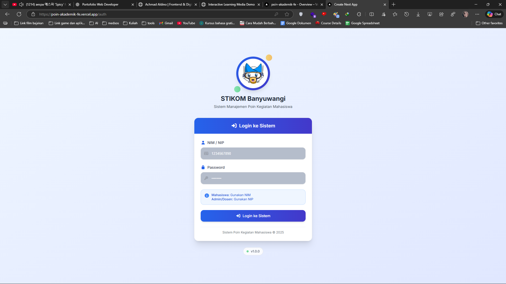
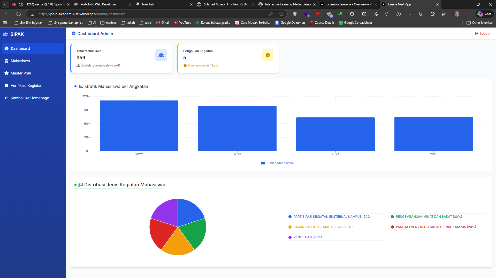
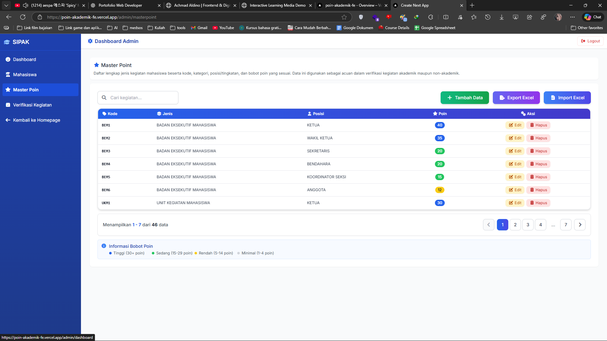
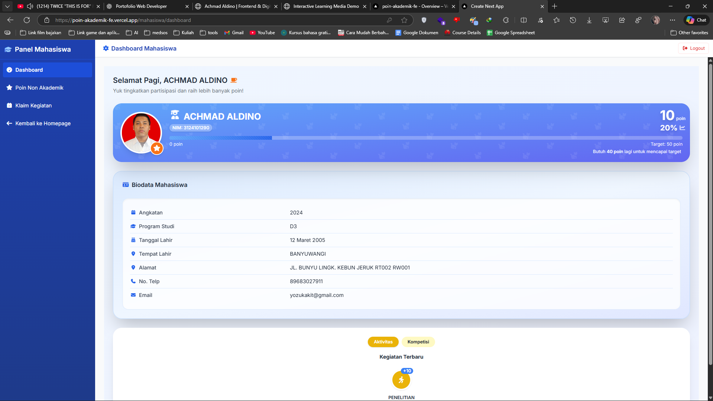

A web-based system designed to manage and verify student academic
and non-academic activities through a structured point-based mechanism.
This project focuses on workflow clarity, role-based access,
and data visualization.
Project Overview
Key Features
Role-based dashboard (Admin & Student)
Activity submission and verification workflow
Master point management system
Academic & non-academic categorization
Data tables, pagination, and status indicators
Charts and summary statistics
Technology & Stack
Frontend: React / Next.js
Styling: Tailwind / Custom UI
Backend: API-based service
Deployment: Vercel (Frontend), Railway (Backend)
Authentication: Role-based access control
Interface Screenshots

Authentication page with role-based login (Student & Admin).

Admin dashboard showing summary statistics and activity distribution.

Master point management for defining activity categories and point values.

Student dashboard displaying personal progress and point achievements.
This project is presented as a case study.
Live access is not publicly available due to sensitive institutional data
and privacy considerations. Demo access can be provided upon request.